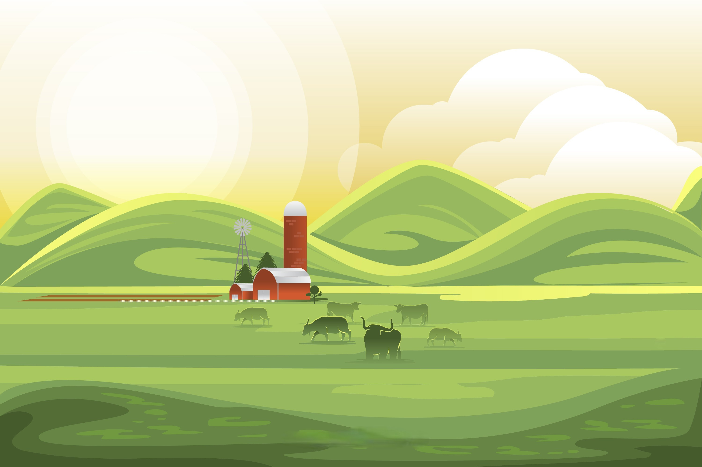

Farm Fusion is a game-changing agriculture website that combines
technology and expertise to empower farmers. We are committed to
revolutionizing the industry and driving sustainable growth. Through
our cutting-edge machine learning models, we provide farmers with
invaluable recommendations for crop cultivation and soil management.
By analyzing factors such as soil composition, climate data, and
historical yields, we offer personalized insights that optimize
productivity and profitability. Our platform also enables farmers to
identify and combat leaf diseases by simply uploading images.
Join us today and embark on a transformative journey toward a
greener and more prosperous future in farming.
Farm
Fusion Empowering Farmers with Intelligent Insights and Sustainable Growth.
Fusion Empowering Farmers with Intelligent Insights and Sustainable Growth.
